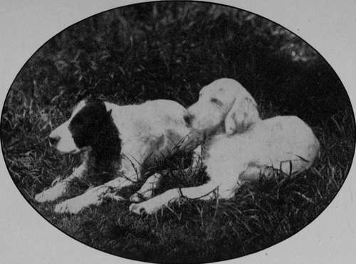

Chapter II. The English Setter
Description
This section is from the book "Sporting Dogs. Their Points And Management In Health, And Disease", by Frank Townend Barton. Also available from Amazon: Sporting Dogs; Their Points and Management in Health and Disease.
Chapter II. The English Setter
Most authorities, or those who have made diligent inquiries into the history—if such it can be called— or origin, of the English Setter, are agreed that it has been derived from the Spaniel—Setting Spaniel —and Laverack, in his work on the Setter, says,—
" I am of the opinion that all Setters have more or less originally sprung from our various strains of Spaniels, and I believe most breeders of any note agree that the Setter is nothing more than a Setting Spaniel. How the Setter attained his sufficiency of point is difficult to account for, and I leave the question to wiser heads than mine to determine. The Setter is said and acknowledged by authorities of long standing, to be of greater antiquity than the Pointer. If this be true—and I believe it is— the Setter cannot at first have been crossed with the Pointer to render him what he is".
If the foregoing views be accepted, it follows that our lovely Setter is but an improved Spaniel.
The Laverack Setters—a strain preserved by the late Mr Laverack—has always played an important part in the more recent history of the Setter. The Llewellin Setter—a strain bred by Mr Llewellin —(a Laverack cross) stands out as being one of the best strains ever produced, both on the show bench and in the field.
A Brace of English Setters at Repose (Pride and Sally, Mr Stanhope Lovell).
An English Setter (Romney Eock).
A high-class English Setter should have a rich, glossy coat, and every movement should be one of elegance, dash, and beauty.
A high degree of intelligence and great power of physical endurance are a sine qua non.
Field trials have done more towards perfecting the working qualities of the Setter than could have been attained by any other means.
The breeding of stock from dogs coming out top at these trials affords the surest means of attaining the highest degree of working capacity.
The points of the English Setter are as follows :—
Coat
To be soft, silky, and free from curl. There ought to be an abundance of soft feather on fore and hind legs.
Colour
Not a great deal of importance is attached to this. The chief colours are:—Liver and white, lemon and white, black, black and white, red or yellow, orange Belton, black and white ticked, with splashes of black, or bluish tint—blue Belton, black, white and tan markings, etc. Black and white ticked are commonest.
Skull
Long and narrow, with a well-developed occipital bone. Muzzle square, and lips full at their angles.
Ears And Eyes
Ears set on low, thin and soft, carried close to the cheeks, and covered by silky hair about a couple of inches in length. Eyes of medium size, either brown or hazel.
Neck
Slightly arched and covered by somewhat loose skin.
Back And Quarters
Arched, and loins wide and strong. Hocks, strong.
Tail
Should be carried in a straight line with the body, and the feather upon it to consist of straight, silky hairs, shortening towards the point. A beautiful flag is a great adornment to the Setter, especially when at work.
Fore Limbs
Shoulders set well back. Forearms straight and strong, of medium length, and with a good fringe at the back. Pasterns short and nearly vertical. Feet well feathered below and cat-like.
Weight
Dogs from 50 to 60 lbs. Bitches, 45 to 55 lbs.
Club
The English Setter.
Faults
Curly coat, snipy head, bad carriage of stern, too light in bone, too short or too long in leg, out at elbows, too heavy in head, bad symmetry, disobedience, bad scenting power, indifferent at work, etc., etc.
Continue to: